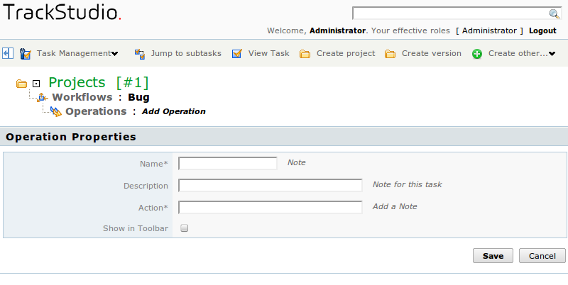
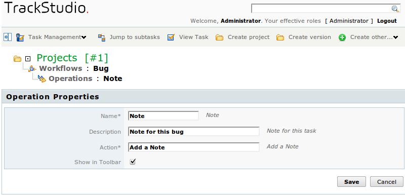

|
<< Click to Display Table of Contents >> Navigation: DocumentationEng > Administrator's Guide > How to define and configure the workflows > How to configure the list of operations with task |
In TrackStudio, tasks are transferred from one state to another with the help of operations. Operations play a very vital role, as this is not only a unique method to lead the task through the life cycle: with the help of operations also change the priority of the task, its execution date, assignee, and the task budget. In operations, the time spent on the stage (if time accounting is used) can be indicated, and the value of custom fields, set for the workflow, changes. For each operation at the time of its execution, the user leaves a comment.
Creation and configuration of set of operations however is the most complex and crucial part of configuring the workflows for TrackStudio.
So as to define the set of operations, go to the page of this workflow through menu, and thereafter — to the tab "OPerations".
Press the button "Add Operation" in the middle panel. In the window that opens, enter the name of the operation, its description and name of the action. You can mark the option "Show in Toolbar". In doing so, on operations panel in the task with this workflow there appears a button, by pressing which the user initiates the execution of operation. Title on the button will correspond to the text, mentioned in the field "Action. Text of operation description will appear in the form of prompt while pointing on this button. If option "Show in Toolbar" is not check marked, then the button of operations will be hidden in the menu "Other operations".
After entering the data, press the button "Save".

So as to change the name of operation, its description or to change the image on the panel, press the icon in the list of operations. In the form that opens, enter the new name of operation and, if required, change its parameters. Press the button "Save" below in the form.

Similarly, you can move to the editing of operation properties from the page of operations. For moving to this page, click on the name of the operation in the list. Operations properties may be edited by pressing the button "Edit operation" in the middle panel.
You can simplify the creation of new operations for yourself by cloning the earlier configured ones. While cloning, all the properties will be fully cloned from the initial operation: transitions between states, access control settings etc. So as to clone the operation, select it in the list and press the button "Clone" below in the form.
So as to delete the operation, mark it with a flag in the list and press the button "Delete" below in the form.
You can’t delete from the workflow the operation, if it is already used in the existing tasks.